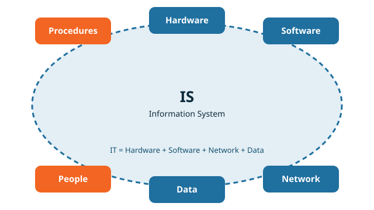

1. IS และ IT
ระบบสารสนเทศ (IS) คือระบบที่ รวบรวม จัดเก็บ ประมวลผล และส่งผ่านข้อมูล

| องค์ประกอบ | ความหมาย | ตัวอย่าง |
|---|---|---|
| Hardware | อุปกรณ์ | คอมพิวเตอร์ เซิร์ฟเวอร์ IoT |
| Software | โปรแกรม | OS แอปพลิเคชัน โปรแกรมวิเคราะห์ข้อมูล |
| Network | เครือข่าย | อินเทอร์เน็ต LAN ไฟเบอร์ Wi-Fi 5G |
| Data | ข้อมูลที่ใช้ในระบบ | ข้อมูลลูกค้า ยอดขาย |
| People | บุคลากรในระบบ | ผู้ใช้ ผู้ดูแลระบบ |
| Procedures | ขั้นตอนการทำงาน | คู่มือ ขั้นตอนอนุมัติ |
จำให้ได้: IT เป็นส่วนหนึ่งของ IS คือ Hardware + Software + Network + Data